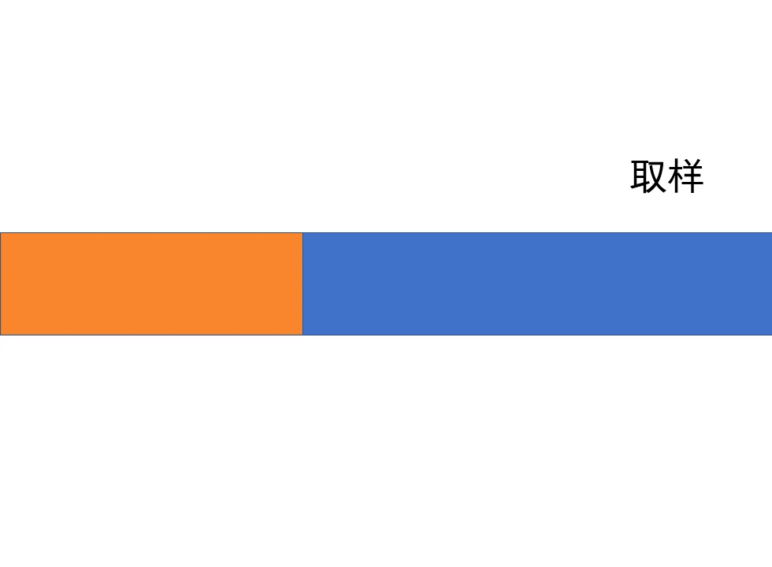
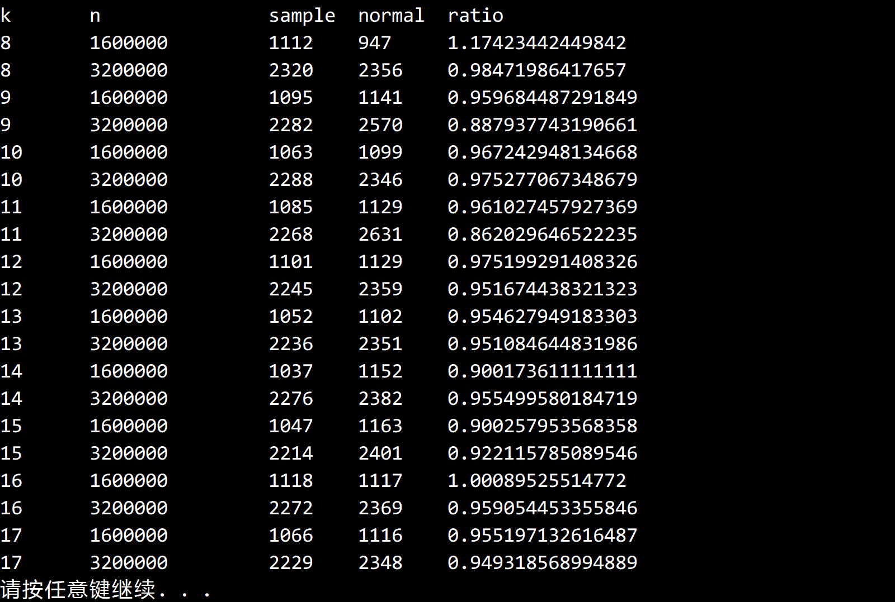

搜索解答
目前已完成到 2.5
2.3.24
上次更新：2019-02-11
题目
2.3.24 取样排序。（W.Frazer，A.McKellar） 实现一个快速排序，取样大小为 2^k-1。 首先将取样得到的元素排序，然后在递归函数中使用样品的中位数切分。 分为两部分的其余样品元素无需再次排序并可以分别应用于原数组的两个子数组。 这种算法称为取样排序。
解答
取样排序的想法很简单： 常规快排的枢轴只有一个。 如果用一个数组来充当枢轴，根据排序位置的不同自动选择对应的枢轴， 显然能够更好的估计中位数，以求更好的切分效果。 于是引入了「取样」的概念，假如我们从源数组中随机取了 3 个元素并对其排序， 那么这 3 个元素的中位数可以作为第一次切分的枢轴，剩余两个元素则可以充当切分后两个子数组的枢轴。 那么当取样元素到达一个合适的数量时，就能达到提升切分效率的目标。
大致思路如下： 首先先从输入数组里随机取一些元素，作为「取样数组」。 用任意排序算法（比如快排）对取样数组进行排序。 （由于取样数组通常都比较小，这一步的时间消耗通常不会影响性能） 取出取样数组里面的中位数，当作枢轴对剩下的数组进行切分。 之后的切分中，根据排序区间在剩余数组中的相对位置， 用取样数组中对应位置的数作为枢轴，直到整个排序完成。
论文里提到了两种实现方式。 第一种方法 取样数组和剩余数组是分开保存的。 每次切分完成后，并不把枢轴放入剩余数组中， 而是等到剩余数组全部排序完毕之后再用一次归并（merge）操作将取样数组和剩余数组归并。 第二种方法 取样数组和剩余数组保存在同一片空间里，这也是这份题解所实现的方法。  在打乱输入数组之后，取前 2^k-1 个元素作为取样数组，用快排对其排序。 然后把取样数组的后半部分放到整个数组的末尾。 这样操作的结果是输入数组分为了四个部分： 有序的取样数组、取样数组的中位数、无序的剩余数组、有序的取样数组。 中位数则位于第一部分的末尾，我们将其作为枢轴对剩余数组进行切分，数组变为： 有序的取样数组、小于中位数的部分、枢轴、大于中位数的部分、有序的取样数组 接下来我们再对第一个部分取半，放到中位数之前；对最后一部分取半，放到中位数之后： 0 ~ 1/4 取样数组、小于中位数、1/4 ~ 1/2 取样数组、枢轴、1/2~3/4 取样数组、大于中位数、3/4~1 取样数组 你会发现枢轴前后又分别变回了初始条件，递归执行上述操作，便能对整个数组排序。 注意当取样数组用完的时候，直接变回普通的快排。
现代的取样排序 这里的「现代」并不意味着更好，只是让取样排序能更好的适应多线程排序。 首先仍然是取样，取样的数量往往取决于线程的数量，比如说取了 p-1 个，就将数组分为 p 份。 对取样数组进行排序，获得 p 个区间（桶）。 遍历输入的数组，把元素扔到相应的桶里面。 把每个桶和对应的枢轴送到对应的线程进行排序。 汇总各个桶中的结果，排序完毕。
测试结果：  大概能提升 5%~10% 的性能。
代码
using System;
using System.Diagnostics;
namespace Quick
{
/// <summary>
/// 取样排序类。
/// </summary>
public class SampleSort : QuickSort
{
/// <summary>
/// 取样数组长度 2^k - 1 的阶数。
/// </summary>
public int K { get; set; }
/// <summary>
/// 默认构造函数。
/// </summary>
public SampleSort()
{
this.K = 8;
}
/// <summary>
/// 用快速排序对数组 a 进行升序排序。
/// </summary>
/// <typeparam name="T">需要排序的类型。</typeparam>
/// <param name="a">需要排序的数组。</param>
public override void Sort<T>(T[] a)
{
if (a.Length < Math.Pow(2, this.K + 1))
{
// 小于 2^(k+1) 的数组直接进行快排
base.Sort(a);
return;
}
Shuffle(a);
int samplehi = (int)Math.Pow(2, this.K) - 2;
// 利用快速排序对取样数组进行排序
base.Sort(a, 0, samplehi);
// 找到取样数组的中位数
int sampleMedian = samplehi / 2;
// 将取样数组后半部分放到数组末尾
int i = samplehi, j = a.Length - 1;
while (i != sampleMedian)
Exch(a, i--, j--);
// 根据取样数组进行排序
Sort(a, 0, sampleMedian, j, a.Length - 1);
Debug.Assert(IsSorted(a));
}
/// <summary>
/// 用快速排序对数组 a 的 lo ~ hi 范围排序。
/// </summary>
/// <typeparam name="T">需要排序的数组类型。</typeparam>
/// <param name="a">需要排序的数组。</param>
/// <param name="samplelo">取样数组的起始下标。</param>
/// <param name="lo">排序范围的起始下标。</param>
/// <param name="hi">排序范围的结束下标。</param>
/// <param name="samplehi">取样数组的终止下标。</param>
private void Sort<T>(T[] a, int samplelo, int lo, int hi, int samplehi) where T : IComparable<T>
{
if (hi <= lo) // 别越界
return;
int j = Partition(a, lo, hi);
// 将前部的有序取样数组取半，后半部分放在枢轴前面。
if (lo - samplelo > 1)
{
// p 应该始终指向有序部分的最后一项
// v 应该始终指向有序部分的前面一项
int p = lo - 1, v = j - 1;
for (int i = 0; i < (lo - samplelo) / 2; i++)
{
Exch(a, p--, v--);
}
Sort(a, samplelo, p, v, j - 1);
}
else
{
// 取样数组已经用完，退化为普通 Quicksort
base.Sort(a, samplelo, j - 1);
}
// 将尾部有序取样数组取半，前半部分放在枢轴后面。
if (samplehi - hi > 1)
{
// p 应该始终指向有序部分的前面一项
// v 应该始终指向有序部分的最后一项
int p = hi, v = j;
for (int i = 0; i < (samplehi - hi) / 2; i++)
{
Exch(a, ++p, ++v);
}
Sort(a, j + 1, v, p, samplehi);
}
else
{
// 取样数组已用完，退化为普通 Quicksort
base.Sort(a, j + 1, samplehi);
}
}
/// <summary>
/// 对数组进行切分，返回枢轴位置。
/// </summary>
/// <typeparam name="T">需要切分的数组类型。</typeparam>
/// <param name="a">需要切分的数组。</param>
/// <param name="lo">切分的起始点。</param>
/// <param name="hi">切分的末尾点。</param>
/// <returns>枢轴下标。</returns>
private int Partition<T>(T[] a, int lo, int hi) where T : IComparable<T>
{
int i = lo, j = hi + 1;
T v = a[lo];
while (true)
{
while (Less(a[++i], v))
if (i == hi)
break;
while (Less(v, a[--j]))
if (j == lo)
break;
if (i >= j)
break;
Exch(a, i, j);
}
Exch(a, lo, j);
return j;
}
/// <summary>
/// 打乱数组。
/// </summary>
/// <typeparam name="T">需要打乱的数组类型。</typeparam>
/// <param name="a">需要打乱的数组。</param>
private void Shuffle<T>(T[] a)
{
Random random = new Random();
for (int i = 0; i < a.Length; i++)
{
int r = i + random.Next(a.Length - i);
T temp = a[i];
a[i] = a[r];
a[r] = temp;
}
}
}
}测试用例：
using System;
using Quick;
namespace _2._3._24
{
/*
* 2.3.24
*
* 取样排序。（W.Frazer，A.McKellar）
* 实现一个快速排序，
* 取样大小为 2^k-1。首先将取样得到的元素排序，
* 然后在递归函数中使用样品的中位数切分。
* 分为两部分的其余样品元素无需再次排序并可以分别应用于原数组的两个子数组。
* 这种算法称为取样排序。
*
*/
class Program
{
static void Main(string[] args)
{
QuickSort quickNormal = new QuickSort();
SampleSort sampleSort = new SampleSort();
int arraySize = 1600000; // 初始数组大小。
const int kSteps = 10; // 取样 k 值的递增次数。
const int trialTimes = 1; // 每次实验的重复次数。
const int trialLevel = 2; // 双倍递增的次数。
Console.WriteLine("k\tn\t\tsample\tnormal\tratio");
for (int i = 0; i < kSteps; i++)
{
int array = arraySize;
for (int j = 0; j < trialLevel; j++)
{
double timeSample = 0;
double timeNormal = 0;
for (int k = 0; k < trialTimes; k++)
{
int[] a = SortCompare.GetRandomArrayInt(array);
int[] b = new int[a.Length];
a.CopyTo(b, 0);
timeNormal += SortCompare.Time(quickNormal, b);
timeSample += SortCompare.Time(sampleSort, a);
}
timeSample /= trialTimes;
timeNormal /= trialTimes;
if (arraySize < 10000000)
Console.WriteLine(sampleSort.K + "\t" + array + "\t\t" + timeSample + "\t" + timeNormal + "\t" + timeSample / timeNormal);
else
Console.WriteLine(sampleSort.K + "\t" + array + "\t" + timeSample + "\t" + timeNormal + "\t" + timeSample / timeNormal);
array *= 2;
}
sampleSort.K++;
}
}
}
}另请参阅
关于取样排序的论文（1970 年）： Frazer W D, McKellar A C. Samplesort: A sampling approach to minimal storage tree sorting[J]. Journal of the ACM (JACM), 1970, 17(3): 496-507. 维基百科中的取样排序： Samplesort-Wikipedia 本题用到的类库链接： Quick 库